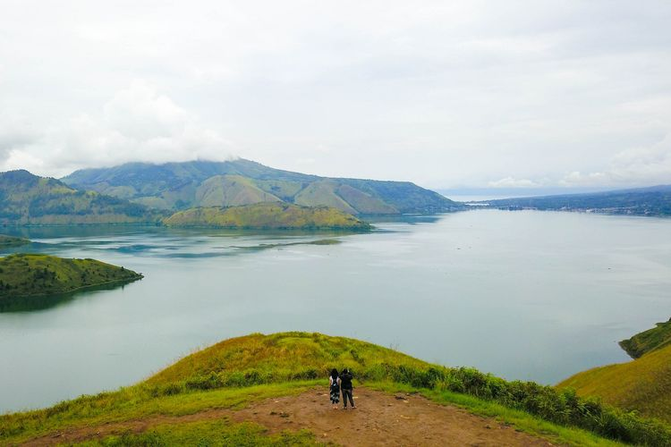

Menara Pandang Tele
Bukit Holbung

Patung Yesus Sibea-bea

Pulau Samosir
Danau Toba dari Ketinggian
Penangkaran Buaya Asam Kumbang
|
Menara Pandang Tele |

Bukit Holbung |
Patung Yesus Sibea-bea |
|
Pulau Samosir |
Danau Toba dari Ketinggian |
Penangkaran Buaya Asam Kumbang |
Nikmati keindahan wisata Danau Toba dan sekitarnya melalui galeri foto ini. Setiap gambar menangkap pesona dan daya tarik dari masing-masing lokasi yang unik.